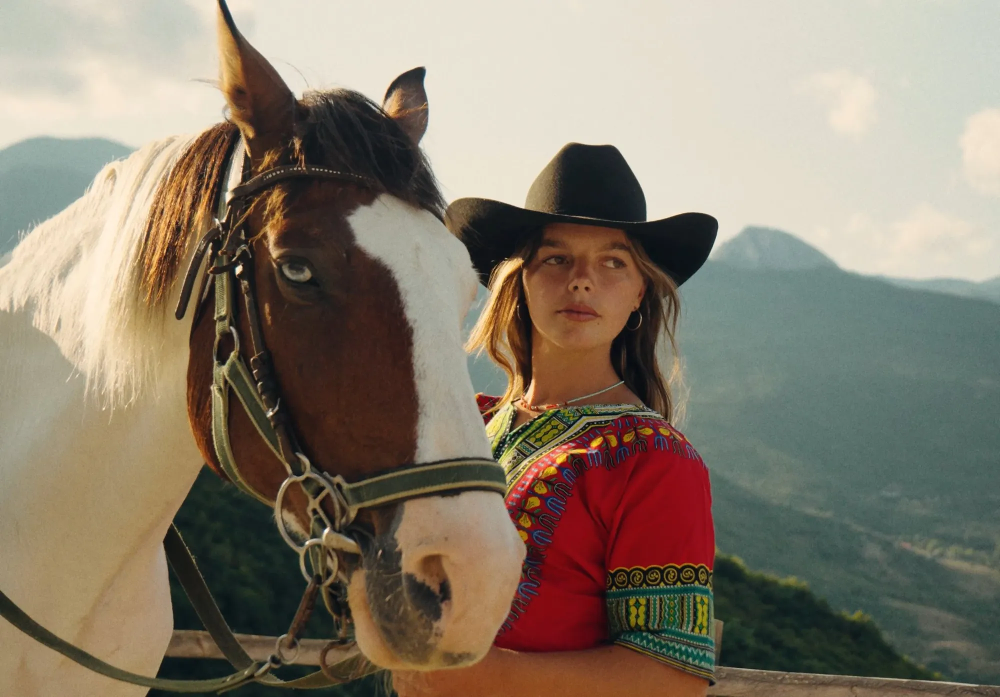
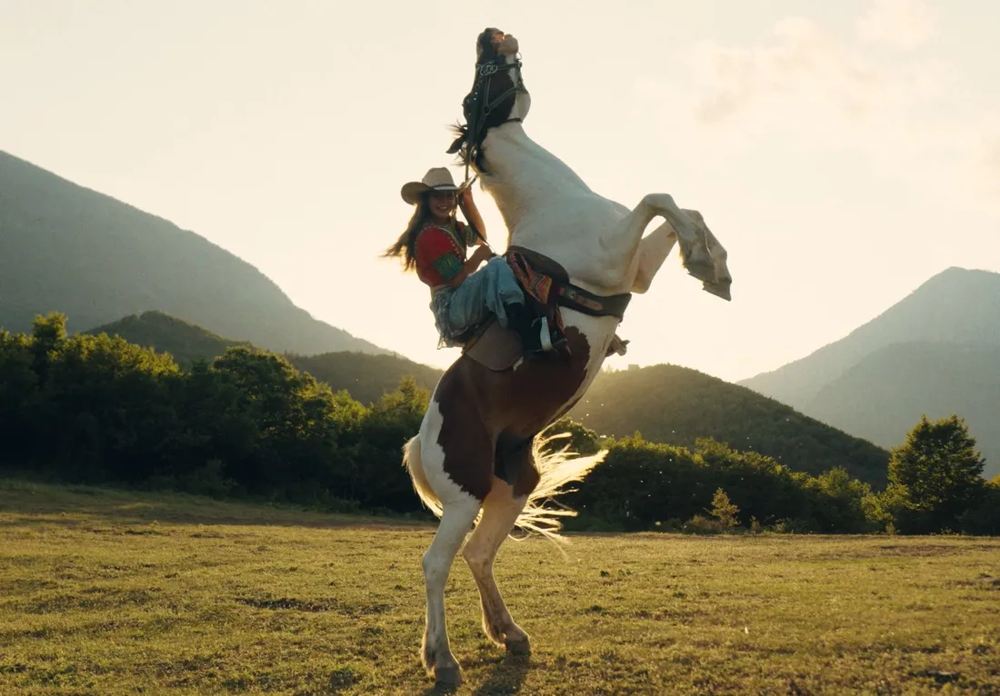
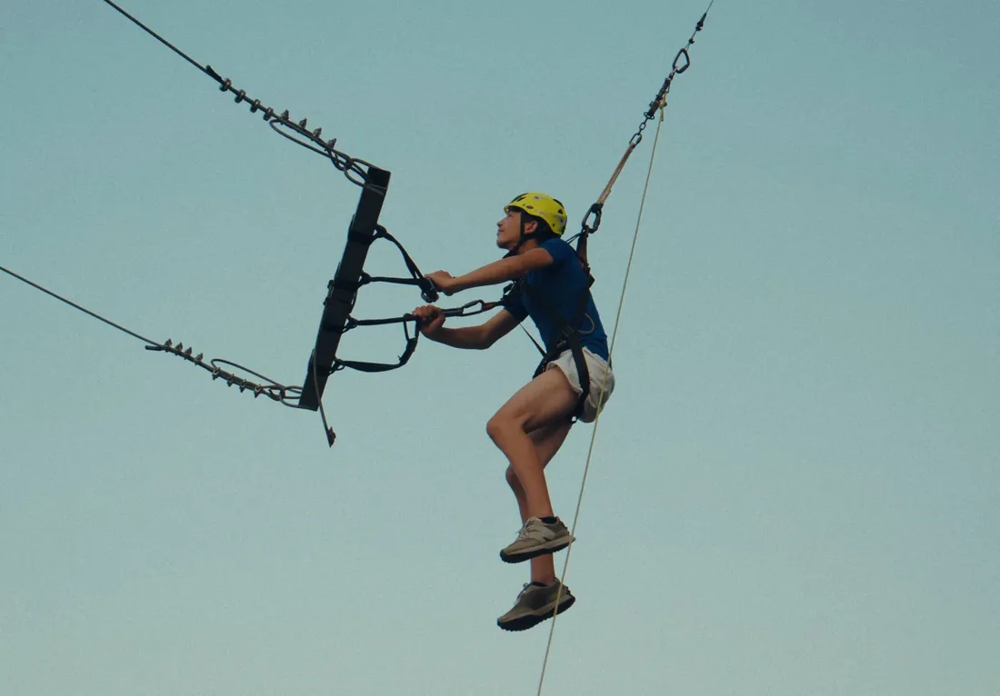
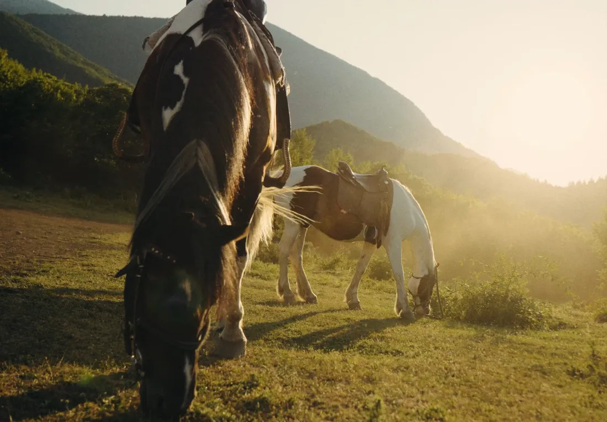
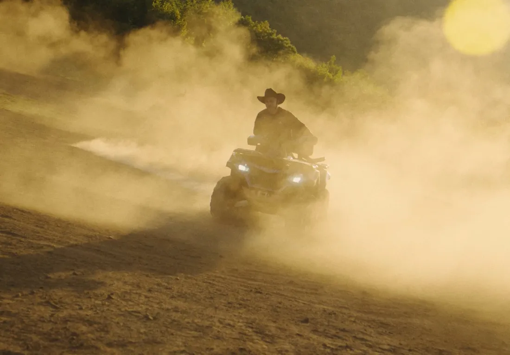
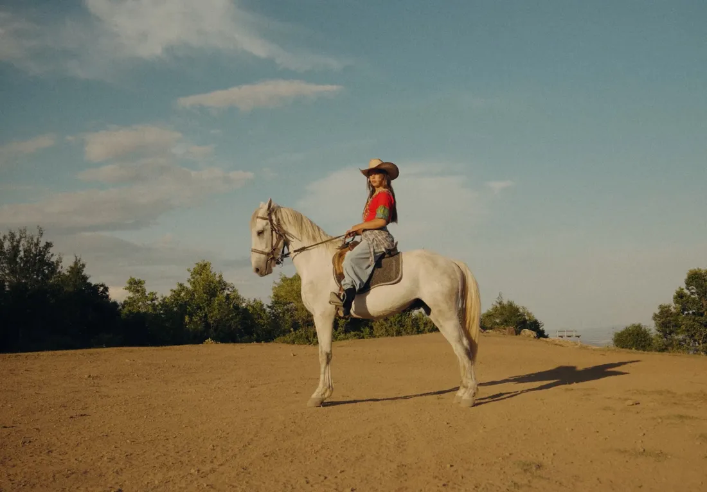
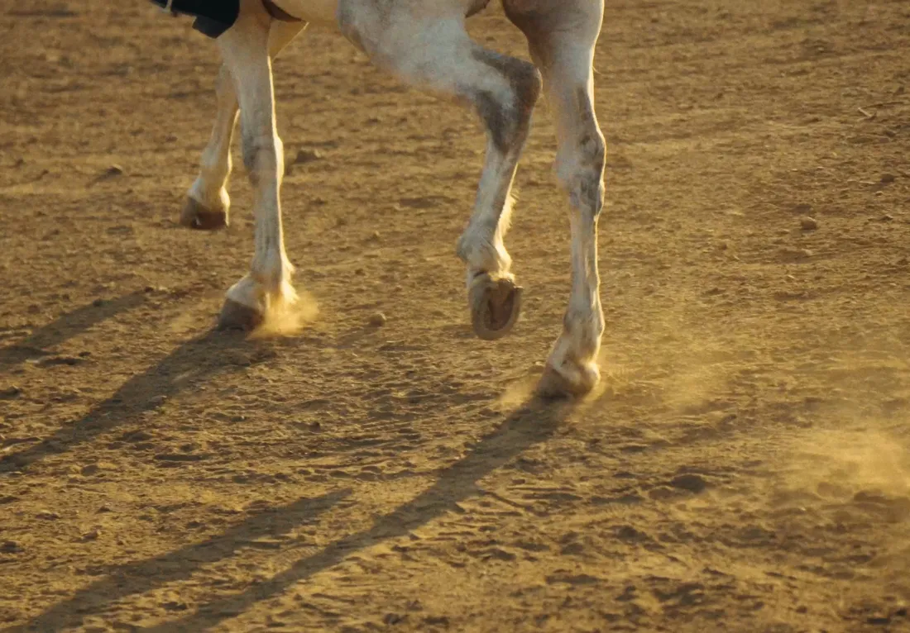
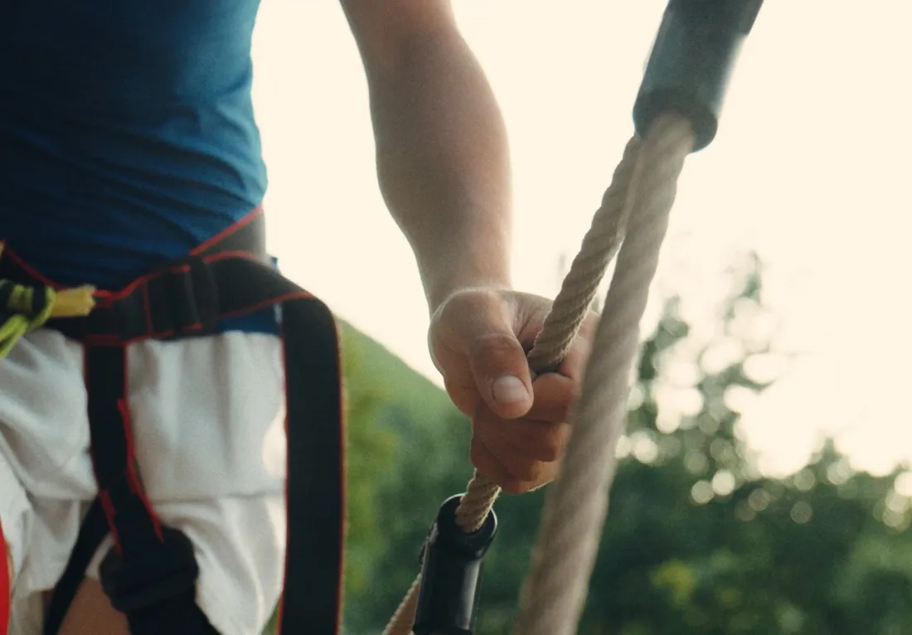
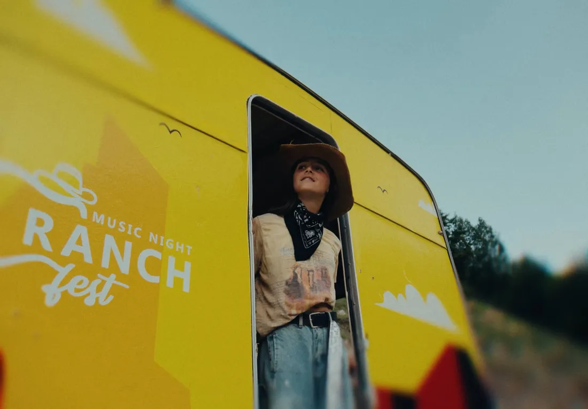
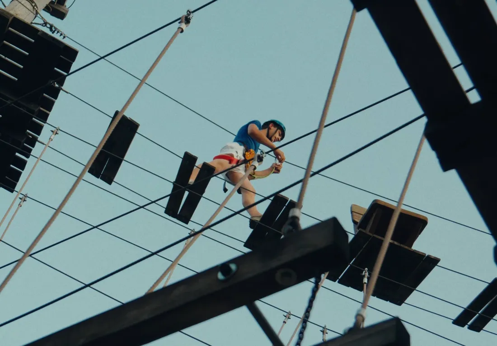

Commercial · Music NightRanch Fest
Commercial for the 7th edition of Ranch Fest Music Night.
Watch on YouTube- Client
- Ranch Fest
- Format
- Commercial / AD
- Edition
- 7th Edition








